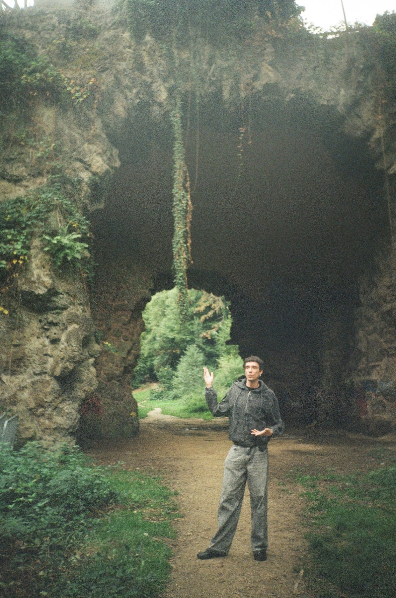

I’m Iago, a product designer from Salvador, Brazil, based in São Paulo. I’ve been working for more than ten years, and for more than five I designed financial products used by millions of people.
I grew up in Aracaju, with the computer as my window to the world. At 17 I was playing in bands in my city and working at a music instrument store, when design showed up as a natural choice for a teenager who drew, painted and already lived between screens.
I studied Design at Universidade Federal de Sergipe, in a program with a strong grounding in the humanities and user-centered design, and spent a year at Universidade Federal do Paraná on an academic exchange focused on digital design. My graduation project gave me one of the best years I’ve had, studying childhood, non-violent communication and the book as a tool for interaction. Guided by one of the most inspiring professionals I’ve worked with, I wrote, illustrated and brought to life a children’s book about non-violent communication for kids aged 8 to 10.
I moved to São Paulo right after graduating, and it didn’t take long to miss having contact with end users in my work. Product design brought that back, and I’m happy to keep returning to methods, hypotheses and real people to test what my restless mind comes up with.
Funnily enough, after that last paragraph, colleagues usually describe me as calm, and my performance reviews talked about what I bring to a team’s climate. The problems that excite me most involve people and leave room for research and imagination. Sometimes more is more, but most of the time less really is more.
Outside product work, I’m a music enthusiast and co-founded Tandera Records, an independent electronic music label in São Paulo, where I manage the label’s releases, events and projects.
Where I’ve worked
- Tandera RecordsCo-founder & Project Lead · 2024–present
- Mercado Pago (Mercado Livre)Product Designer · Open Finance and Pix · 2021–2024
- GuiabolsoProduct Designer · 2019–2021Designer & Illustrator · 2019
- BARCADesigner & Illustrator · 2018–2019
Awards & grants
- Open Summit Awards 2022Open Finance at Mercado Pago, recognized in 4 categories: Case of the Year, Payment Initiation, Financial Inclusion and Best B2C Case
- Shotgun Pride 2026Project selected for Shotgun’s cultural sponsorship during Pride Month, at Tandera Records
- Santander Academic Mobility GrantSemester exchange in Digital Product Design at UFPR, 2016
:)
- iago.novais5@gmail.com
- Resume (PDF)
- Portuguese (native) · English (fluent) · Spanish (intermediate)
- Open to remote and hybrid roles, and to relocating to Europe